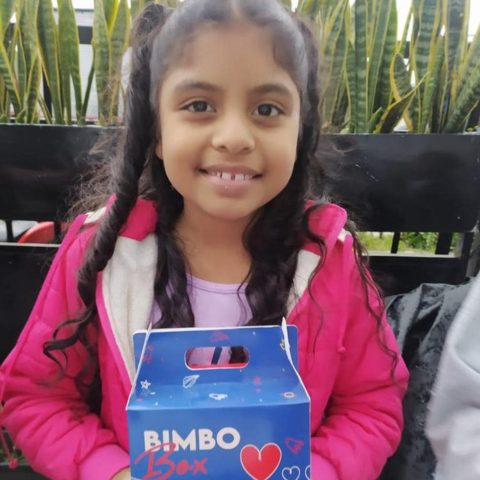
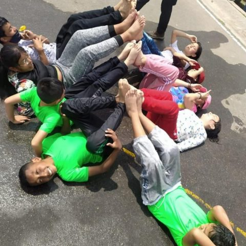
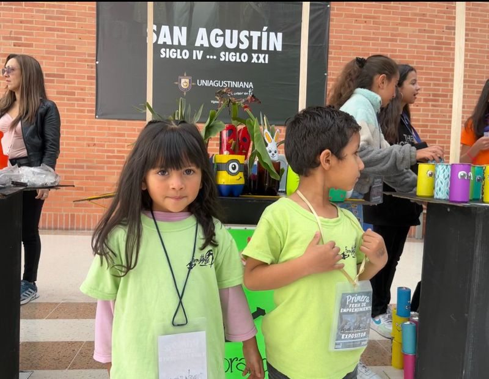
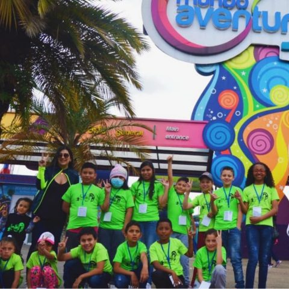
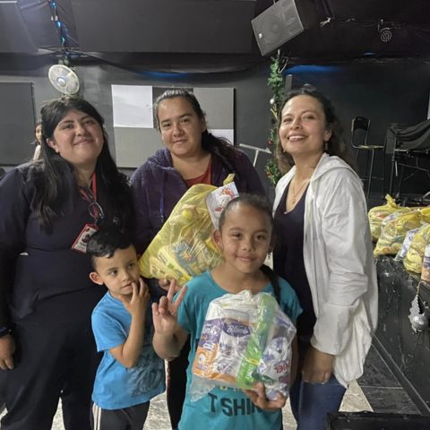
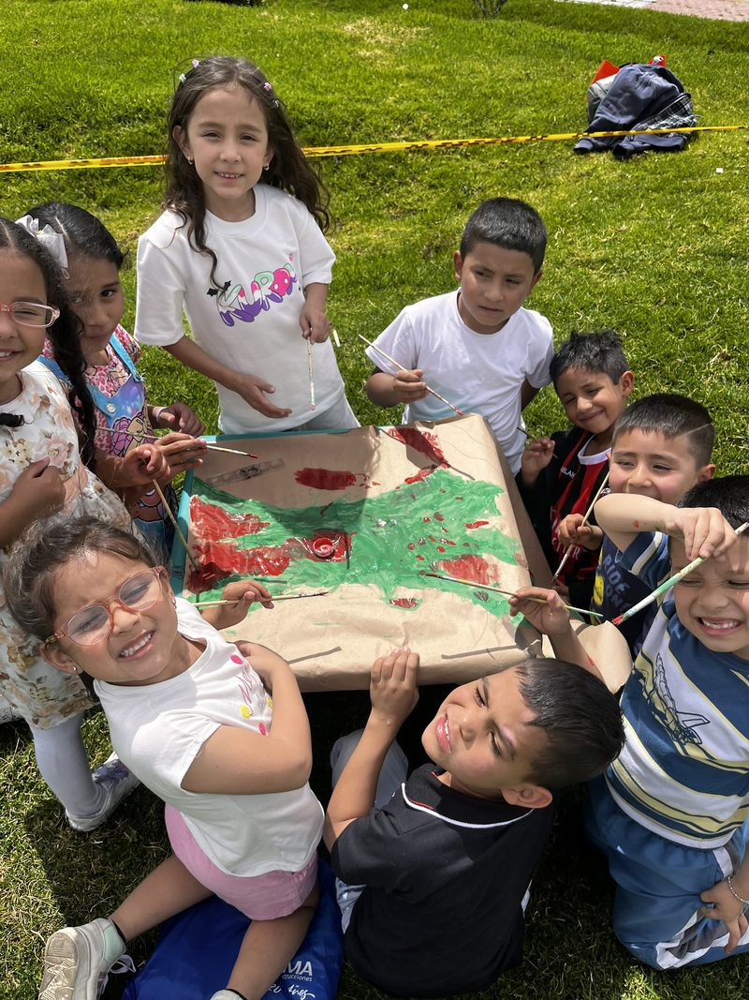

Nuestros programas
Acompañamos a niños, niñas y adolescentes de Patio Bonito, y a sus familias, con seis programas de formación, atención psicosocial y alimentación.
Seis programas para crecer
Cada programa tiene su propia página, con lo que hace, cómo funciona y cómo participar.
-

Alimentarte
Alimenta tu cuerpo, nutre tu mente
Lácteos, verduras y proteínas cada semana para familias que ganan hasta un salario mínimo, con capacitación en habilidades para la vida.
Conoce el programa Alimentarte -

Formarte
Formación integral para futuros brillantes
Fútbol, danza y arte cada sábado para desarrollar talentos, hábitos y un proyecto de vida.
Conoce el programa Formarte -

Educarte
Capacitación para familias y jóvenes
Formación para familias, voluntarios y adolescentes en temas psicosociales, prevención del abuso y herramientas para la vida, con apoyo de la tecnología.
Conoce el programa Educarte -

Bienestar infantil
Recreación y bienestar como derecho
Acceso a parques, entretenimiento y espacios culturales, porque jugar y descubrir también cuidan la salud mental.
Conoce el programa Bienestar infantil -

Dignificarte
Dignificación como catalizador del éxito
Artículos para el hogar, brigadas de salud y convenios que mejoran la calidad de vida de las familias.
Conoce el programa Dignificarte -

Tu mente tu aliada
Atención psicológica y social
Atención psicológica y social en salud mental y emocional, para que niños, niñas y adolescentes desarrollen de forma sana su personalidad y su autoestima.
Conoce el programa Tu mente tu aliada
Cómo trabajamos
Lo que protege a un niño
Un propósito, alguien que lo escuche y comida en la mesa. Esas tres cosas cuidan la salud mental de un niño, y sobre ellas construimos nuestro trabajo.
-
Formación y educación
Un propósito
Cuando un niño no ve un camino hacia adelante, puede sentir desesperanza y vacío. Por eso ofrecemos formación deportiva y artística, y acompañamos a los jóvenes en la construcción de su proyecto de vida.
-
Atención psicosocial
Alguien que lo escuche
Sentirse escuchado fortalece las redes de apoyo que protegen la salud mental. Por eso brindamos atención psicológica y social, con seguimiento a cada caso y acompañamiento a la familia.
-
Seguridad alimentaria y humanitaria
Comida en la mesa
Cuando falta la comida, crecen las tensiones en casa. Por eso reforzamos cada semana la canasta familiar de los hogares en riesgo alimentario.
Familias
Quién puede participar
“Para acceder a nuestros programas, es necesario ser parte de la comunidad beneficiaria de la fundación: niños y niñas que enfrentan situaciones de vulnerabilidad, así como sus familias.”
- Dónde trabajamos
- En Bogotá: Patio Bonito, Bella Vista y Tierra Buena.
- Clases
- Fútbol, danza y arte los sábados, para niños, niñas y adolescentes de 9 a 18 años. horario por confirmar
- Inscripción
- Con un formulario en línea.
También en Nuestro trabajo
-
Efectos de nuestros programas
Lo que cambia con nuestros programas y los doce resultados que publicamos para 2023.
Ver los resultados de 2023 -
Nuestro aporte a los ODS
Los siete Objetivos de Desarrollo Sostenible a los que aporta nuestro trabajo.
Ver los ODS a los que aportamos -
Nuestro aporte a la agenda de desarrollo nacional
Cómo se relaciona nuestro trabajo con la agenda de desarrollo nacional. contenido pendiente
Ver la página sobre la agenda de desarrollo nacional -
Boletines de gestión
El boletín «Un lugar en acción» de 2023 y el informe de gestión social de 2022.
Ver los boletines e informes -
Certificado de trayectoria
El certificado de trayectoria de 2024 y el RUT de la fundación.
Ver los documentos del certificado y el RUT -
Educarte, formación en línea
La plataforma de formación en línea de la fundación.
Ir a Educarte.info (se abre en una pestaña nueva)
Apoya nuestros programas
Con $45.000 al mes (es decir, $1.500 al día) apadrinas a un niño y apoyas su formación, su alimentación y su acompañamiento. monto por confirmar
Pendientes de confirmación (vista previa)
Cada elemento marcado por confirmar en esta página depende de una suposición de trabajo o de información que la fundación aún no ha confirmado. Nada se publica hasta que la fundación lo confirme.
- Programas: las descripciones vienen de las páginas de cada programa y de «Nuestros programas» (2024); confirmar que siguen vigentes.
- Requisito de acceso: qué significa ser parte de la «comunidad beneficiaria» y cómo se llega a ella.
- Horario de clases: los sábados, de 9 a 18 años; el último horario publicado es el del primer semestre de 2025. Destinatario del formulario de inscripción.
- Apadrinamiento: monto de $45.000 al mes ($1.500 al día) y qué cubre.
- Consentimiento de imagen: ninguna de las seis fotos de los programas tiene consentimiento registrado. La de Alimentarte es un retrato cercano; su página usa una foto de grupo.
- Agenda de desarrollo nacional: la página aún no tiene contenido.
- Línea 106 y 123: el líder psicosocial aprueba el texto sobre salud mental y la línea de ayuda, y los números se vuelven a verificar antes de publicar (fuente: Secretaría Distrital de Salud de Bogotá, consultada el 24 de septiembre de 2026).
- Pie de página: NIT y dirección registrada; que los números de WhatsApp y los correos sean los públicos.